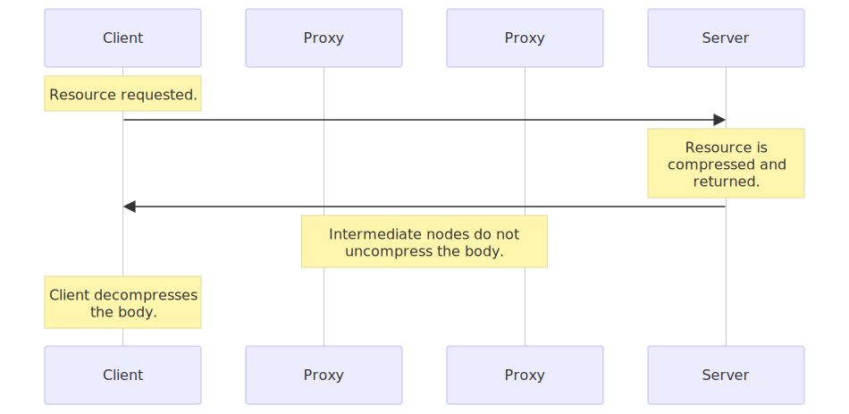
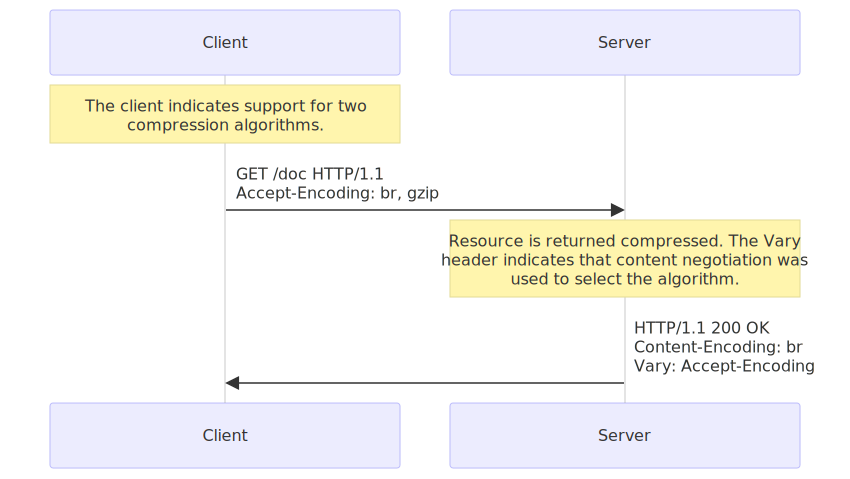
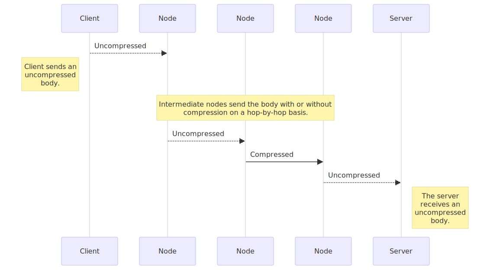
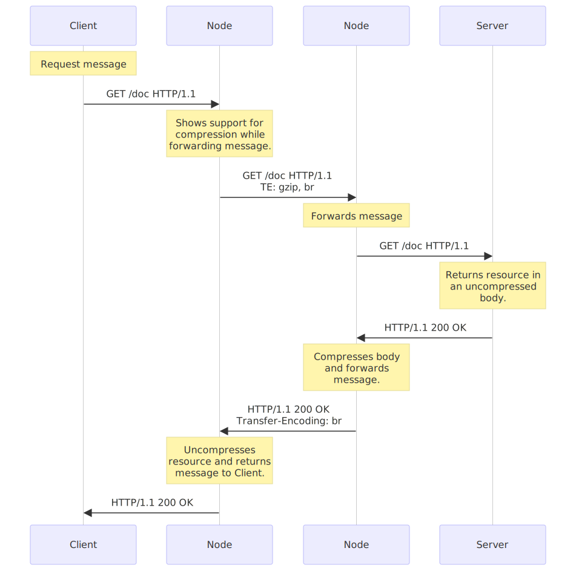

Compression in HTTP
Compression is an important way to increase the performance of a website. For some documents, size reduction of up to 70% lowers the bandwidth capacity needs. Over the years, algorithms also got more efficient, and new ones are supported by clients and servers.
In practice, web developers don't need to implement compression mechanisms, both browsers and servers have it implemented already, but they have to be sure that the server is configured adequately. Compression happens at three different levels:
- first some file formats are compressed with specific optimized methods,
- then general compression can happen at the HTTP level (the resource is transmitted compressed from end to end),
- and finally compression can be defined at the connection level, between two nodes of an HTTP connection.
File format compression
Each data type has some redundancy, that is wasted space, in it. If text can typically have as much as 60% redundancy, this rate can be much higher for some other media like audio and video. Unlike text, these other media types use a lot of space to store their data and the need to optimize storage and regain space was apparent very early. Engineers designed the optimized compression algorithm used by file formats designed for this specific purpose. Compression algorithms used for files can be grouped into two broad categories:
- Loss-less compression, where the compression-decompression cycle doesn't alter the data that is recovered. It matches (byte to byte) with the original.
For images,
giforpngare using lossless compression. - Lossy compression, where the cycle alters the original data in a (hopefully) imperceptible way for the user.
Video formats on the Web are lossy; the
jpegimage format is also lossy.
Some formats can be used for both loss-less or lossy compression, like webp, and usually lossy algorithm can be configured to compress more or less, which then of course leads to less or more quality. For better performance of a website, it is ideal to compress as much as possible, while keeping an acceptable level of quality. For images, an image generated by a tool could be not optimized enough for the Web; it is recommended to use tools that will compress as much as possible with the required quality. There are numerous tools that are specialized for this.
Lossy compression algorithms are usually more efficient than loss-less ones.
Note: As compression works better on a specific kind of files, it usually provides nothing to compress them a second time. In fact, this is often counterproductive as the cost of the overhead (algorithms usually need a dictionary that adds to the initial size) can be higher than the extra gain in compression resulting in a larger file. Do not use the two following techniques for files in a compressed format.
End-to-end compression
For compression, end-to-end compression is where the largest performance improvements of websites reside. End-to-end compression refers to a compression of the body of a message that is done by the server and will last unchanged until it reaches the client. Whatever the intermediate nodes are, they leave the body untouched.

All modern browsers and servers do support it and the only thing to negotiate is the compression algorithm to use. These algorithms are optimized for text. In the 1990s, compression technology was advancing at a rapid pace and numerous successive algorithms have been added to the set of possible choices. Nowadays, only two are relevant: gzip, the most common one, and br the new challenger.
To select the algorithm to use, browsers and servers use proactive content negotiation. The browser sends an Accept-Encoding header with the algorithm it supports and its order of precedence, the server picks one, uses it to compress the body of the response and uses the Content-Encoding header to tell the browser the algorithm it has chosen. As content negotiation has been used to choose a representation based on its encoding, the server must send a Vary header containing at least Accept-Encoding alongside this header in the response; that way, caches will be able to cache the different representations of the resource.

As compression brings significant performance improvements, it is recommended to activate it for all files except already compressed ones like images, audio files and videos.
Apache supports compression and uses mod_deflate; for Nginx there is ngx_http_gzip_module; for IIS, the <httpCompression> element.
Compression dictionary transport
Modern compression formats such as Brotli compression and Zstandard compression can use dictionaries of frequently used data to further increase compression over just referencing those from within the file being compressed. Typically, for HTTP responses, this uses the predefined static dictionary included in that format (for example the Brotli static dictionary is available in the source code).
Compression Dictionary Transport enables a developer to specify a resource which can be used as a dictionary for future requests. This can either be a specific dictionary file, or an existing resource (for example, using app.v1.js as a dictionary when downloading app.v2.js). This typically improves compression and therefore load time. In the app.vX.js example, most of the download would consist of only the delta between the two versions, and the common bytes could be referenced from the original app.v1.js file that is already downloaded.
Hop-by-hop compression
Hop-by-hop compression, though similar to end-to-end compression, differs by one fundamental element: the compression doesn't happen on the resource in the server, creating a specific representation that is then transmitted, but on the body of the message between any two nodes on the path between the client and the server. Connections between successive intermediate nodes may apply a different compression.

To do this, HTTP uses a mechanism similar to the content negotiation for end-to-end compression: the node transmitting the request advertizes its will using the TE header and the other node chooses the adequate method, applies it, and indicates its choice with the Transfer-Encoding header.

In practice, hop-by-hop compression is transparent for the server and the client, and is rarely used. TE and Transfer-Encoding are mostly used to send a response by chunks, allowing to start transmitting a resource without knowing its length.
Note that using Transfer-Encoding and compression at the hop level is so rare that most servers, like Apache, Nginx, or IIS, have no easy way to configure it. Such configuration usually happens at the proxy level.